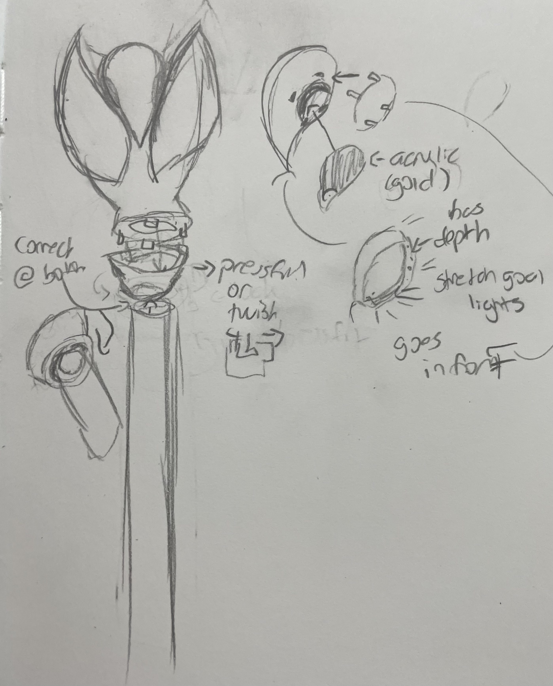
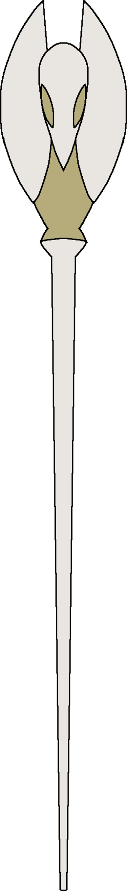
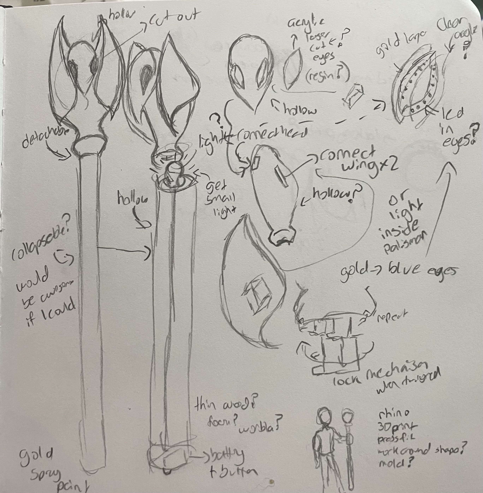

Belinda Bleeker's Final Project Proposal!

For my final project I wanted to work on a cosplay I've been working on for Comic-Con 2023, cool aunt Lilith from the Owl House. Specifically I wanted to try making her palisman/staff. This would be used in my Cosplay and possible other cosplays of the same character. Lilith's palisam/staff is pictured below first from the show , then one example as just a 3D print , and then one as a finished prop
{kind=link}
{kind=link}



I want to make one, with some slight changes, eventually I would love to add lights so I want to make a prop that I can add to later. This means that the 3D print top needs to be hollow, separate from the staff, and have empty space for the eyes. Here are some of my concept sketches.
 This was my first initial ideas. I further refined them in my second sketch.
For this project I will use rhino, 3D printing, a laser cutter and/or molding, pressfit parts, and as a stretch goal a stock part. Here is a list of the tasks: 1. Find .Stl of palisman and edit in Rhino (either through thingiverse or buying it) 2. Design pressfit pieces for eyes, inner and outer (inner eye may be glued). The outer one will pressfit into the 3D printed piece. (laser cut can become a stretch goal based on what I have done at the time) 3. Print pieces & make touch-ups (check that everything fits right) 4. Lasercut arcylic for inner eye 5. Cast and mold for outer eye Stretch Goals 6. Create secondary piece to fit pvc pipe into the 3D print 7. Paint the 3D print and staff
My timeline is set to start on Tuesday the 22nd with it being finished on the 6th. Give myself 1-3 Days to edit the .stl files. This includes the pressfit eye pieces, the main piece, and if time allows the piece to connect to a pvc pipe. I must have the pressfit sections work, if I can't make it hollow by mid-day 25th I will scrap the laser cut idea. Next I 3D printing and finishing should take hopefully at most 3-4 days. They key things that need to work is 1. the top piece prints well and 2. the pressfit piece for the eyes works. If my at home printer doesn't work (deadline is the 28th) I will go the The 8 or The Mill to print them there. I will go to school first thing in the morning that monday and spend as much time a possible to complete it. If things go to plan the 28th-29th should be finishing up parts, sanding ect. I will make a sylicone mold of the two eye pieces I would have printed using this method. This should take max one day. If it isn't done in one day I will laser cut them in a pressfit pattern which I will lasercut on the 30th. If the molds are done by the afternoon I will use casting resin in a vacuum chamber to create the clear eye pieces. I will give myself 1-2 days to complete this. I will test the fit as soon as possible after each cure. If these steps are not completed before the 30th I will ignore doing the following stretch goals. I will laser cut the inner eye pieces with gold acrlyic at The 8 or The Mill on the 1st or 2nd. I will bring the 3D printed piece to test the fit there so I can adjust and try again on the same day. If I haven't made the part for the pvc pipe I would do it on the weekend (3rd-4th). Lastly, I will spray paint the pieces white or gold the 5th or 6th. (not including pressfit parts)
A list of materials and when I need them by Have as of the 22nd: 3D printer, filament (have plent of already) 3D model ( free or bought $8.29) 26th: silicone kit (have from class), resin kit ($30.48 already purchased), Gold acrlyic ($15+ based on website) and possibly clear acrylic based on what has worked so far. 30th: Gold ($7.49) and White spray Paint ($7.99). 1 ¼ PVC pipe would hopefully sourced before the 22nd (piece to connect to main piece can be designed in two parts and there are preset restricitons by the size of the pipe) but if I can't the absolute latest would be the 30th.
That is my current plan.
Return to index